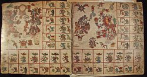

Los libros de los aztecas eran del todo pictográficos. Eventos, acciones, fechas, nombres, e ideas eran comunicados a través de imágenes convencionales. Los pictogramas mantenían algún tipo de similitud o estaban visualmente asociados con ideas, cosas o acciones representadas (casa, árbol, movimiento). Los ideogramas comunicaban conceptos más amplios (pueblo, año, día). Logogramas eran imágenes que representaban palabras. Se trataba de un método complejo y flexible en el cual pictogramas, ideogramas y logogramas podían ser combinados en una misma imagen. Puesto que los aztecas conquistaron poblaciones que hablaban otras lenguas, este eficiente sistema pictográfico hizo posible que las personas educadas pudieran leer los mismos documentos sin necesidad de hablar una misma lengua.
El saber se atribuía al conocimiento acumulado de la nobleza educada y los sacerdotes, cuya forma más alta de expresión se encontraba en la recitación de los elocuentes discursos aprendidos en las escuelas para la nobleza (calmecac). Relatos de testigos del siglo XVI nos dejan saber que los libros eran interpretados (recitados o cantados) para expresar su riqueza de contenidos y significación.
El padre Motolonía, un fraile franciscano español, describe cinco tipos de libros precolombinos, todos escritos con figuras y símbolos: historias; ceremonias; y tres tipos de calendarios adivinatorios utilizados para determinar el futuro, nombrar niños, e indicar los tiempos más propicios para los ritos y ceremonias. Había tres formatos para los libros y el saber pictográfico: biombo (una larga tira de amatl, papel de corteza, doblado en forma de acordeón), tira (una larga tira de papel desplegado) y lienzo (una hoja grande usualmente de tela) en los cuales las imágenes estaban pintadas. Aunque hay un gran número de documentos pictográficos del periodo colonial, no subsiste ningún documento azteca indiscutiblemente anterior a la conquista.
|  |
Un manuscrito en forma de biombo en amatl (papel de corteza), el Códice Borbónico es un calendario adivinatorio (tonalamatl/libro de los días) utilizado para adivinar el futuro con propósitos prácticos y rituales. Cada página representa una “semana” de trece días en un calendario de 260 días donde están prominentemente plasmados los dioses regentes y los símbolos asociados con la semana. En los recuadros al borde de cada página, los días de la semana nombrados y numerados (por puntos del 1 al 13) están acompañados por seres supernaturales que los rigen (pájaros y deidades). Una obra maestra del estilo azteca, el Códice Borbónico se cree hecho después de la llegada de los españoles. Observe las palabras en español que glosan el texto pictográfico de los días numerados.